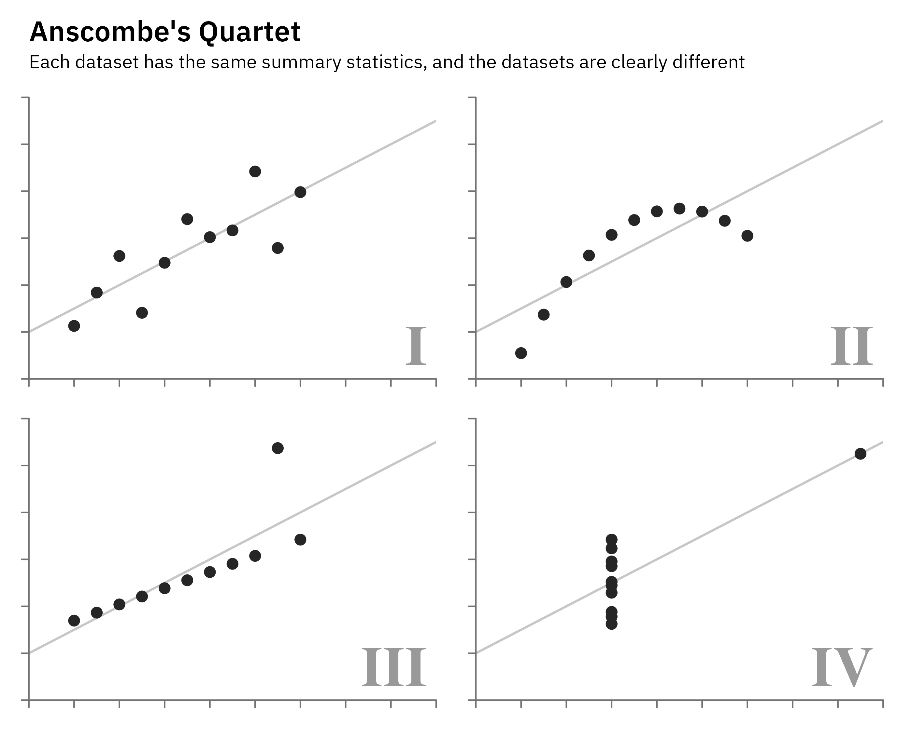

Show the R code
fit <- coef(lm(y ~ x, data = filter(quartet, set == "I"))) # the same for all four
ggplot(quartet, aes(x, y)) +
geom_abline(intercept = fit[1], slope = fit[2], colour = "grey78", linewidth = .6) +
geom_point(colour = "grey15", size = 2.4) +
geom_text(data = distinct(quartet, set), aes(label = set), x = 19.6, y = 2.6,
hjust = 1, vjust = 0, family = "serif", fontface = "bold",
size = 11, colour = "grey60") +
facet_wrap(~set, ncol = 2, axes = "all") + # every panel its own axes, as drawn
scale_x_continuous(breaks = seq(2, 20, 2), limits = c(2, 20), expand = c(0, 0)) +
scale_y_continuous(breaks = seq(2, 14, 2), limits = c(2, 14), expand = c(0, 0)) +
labs(title = "Anscombe's Quartet",
subtitle = "Each dataset has the same summary statistics, and the datasets are clearly different") +
theme_void(base_family = dsvar_font()) +
theme(plot.title = element_text(face = "bold", size = 16, margin = margin(b = 4)),
plot.subtitle = element_text(size = 10.5, margin = margin(b = 14)),
axis.line = element_line(colour = "grey45", linewidth = .4),
axis.ticks = element_line(colour = "grey45", linewidth = .4),
axis.ticks.length = unit(4, "pt"),
strip.text = element_blank(),
panel.spacing = unit(18, "pt"),
plot.margin = margin(12, 16, 12, 12))
Show the R code
q_stats <- quartet |>
group_by(set) |>
summarise(mx = mean(x), my = mean(y), sx = sd(x), sy = sd(y), r = cor(x, y))